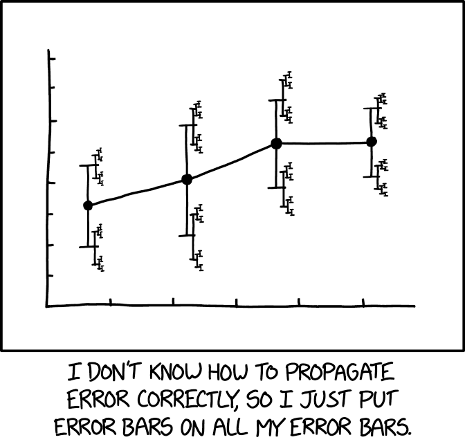

Measurements.jl
What Is This Package Useful For?

Image credit: "xkcd" (CC-BY-NC 2.5)
Measurements.jl relieves you from the hassle of propagating uncertainties coming from physical measurements, when performing mathematical operations involving them. The linear error propagation theory is employed to propagate the errors.
This library is written in Julia, a modern high-level, high-performance dynamic programming language designed for technical computing.
When used in the Julia interactive session, it can serve also as an easy-to-use calculator.
Features List
The main features of the package are:
- Support for most mathematical operations available in Julia standard library and special functions from SpecialFunctions.jl package, involving real and complex numbers. All existing functions that accept
AbstractFloat(andComplex{AbstractFloat}as well) arguments and internally use already supported functions can in turn perform calculations involving numbers with uncertainties without being redefined. This greatly enhances the power ofMeasurements.jlwithout effort for the users - Functional correlation between variables is correctly handled, so $x - x \approx 0 \pm 0$, $x/x \approx 1 \pm 0$, $\tan(x) \approx \sin(x)/\cos(x)$, $\mathrm{cis}(x) \approx \exp(ix)$, etc...
- Support for arbitrary precision (also called multiple precision) numbers with uncertainties. This is useful for measurements with very low relative error
- Define arrays of measurements and perform calculations with them. Some linear algebra functions work out-of-the-box
- Propagate uncertainty for any function of real arguments (including functions based on C/Fortran calls), using
@uncertainmacro - Function to get the derivative and the gradient of an expression with respect to one or more independent measurements
- Functions to calculate standard score and weighted mean
- Parse strings to create measurement objects
- Easy way to attach the uncertainty to a number using the
±sign as infix operator. This syntactic sugar makes the code more readable and visually appealing - Combined with external packages allows for error propagation of measurements with their physical units
- Extensible in combination with external packages: you can propagate errors of measurements with their physical units, perform numerical integration with QuadGK.jl, numerical and automatic differentiation, and much more.
- Integration with Plots.jl.
A current limitation of the package is that it is not yet possible to define quantities related by a correlation matrix.
Citation and license
The method used to handle functional correlation is described in this paper:
- M. Giordano, 2016, "Uncertainty propagation with functionally correlated quantities", arXiv:1610.08716 (Bibcode: 2016arXiv161008716G)
If you use use this package for your research, please cite it. For your convience, a BibTeX entry is provided in the CITATION.bib file.
Other features are expected to come in the future, see the How Can I Help? section and the TODO list.
The Measurements.jl package is licensed under the MIT "Expat" License. The original author is Mosè Giordano.